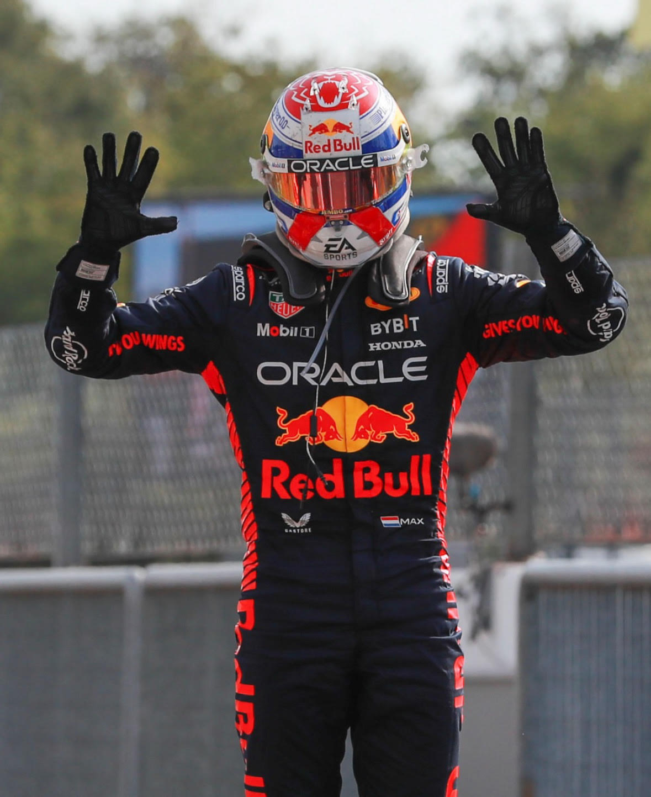
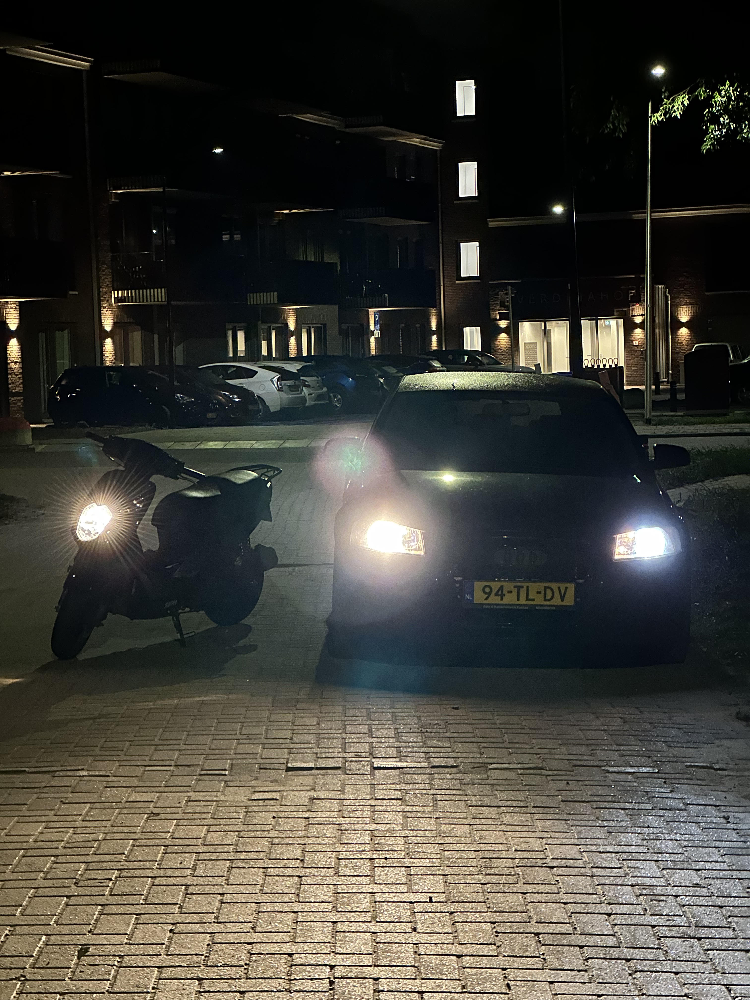

Jorick Bakker
Hallo mijn naam is Jorick Bakker. Ik ben 20 jaar en jarig op 14 Februari 2003. Ik kom van goeree over flakkee uit het dorp sommelsdijk. Ik ben deze opleiding gaan doen nadat ik een tussen jaar had genomen. Ik wist niet wat ik het liefst wilde doen als men toekomst baan. Toen kwam ik deze opleiding tegen en leek het mij heel intressant. En ik ben nu ook heel blij dat ik deze opleiding heb gekozen.

Wat vind ik leuk om te doen:
Ik ben een grote fan van max verstappen. Op het moment
dat jullie dit lezen zal hij ook al zijn 3de wereld titel hebben. Ik kijk
elke race mis er geen een. Ben ik aan het
rijden, Dan luister ik er wel naar. Er is altijd wel tijd voor. Ook game ik graag. Dat doe
ik het liefste op de bank achter de tv. Of achter mijn bureau
op mijn computer met vrienden. Ook vind ik het leuk om
met mijn auto te gaan rijden of met mijn scooter. Ik vind het Ook
altijd leuk om met vrienden te gaan karten of een escape room te doen. Wij doen
vaker dit soort dingen. En werken bij dhl vind ook heel leuk om te doen.

Nog wat over mezelf:
Ik ben dol op auto rijden. Ik doe heel vaak en ook heel graag. Als we ergens
heen moeten met vrienden dan rijd ik sowieso met mijn auto. Of met de scooter
dan rijd ik ook altijd wel mee. Links zien jullie ook nog een foto van
mijn auto en scooter. Wel een beetje donker want zijn allebei zwart gekleurd dus
goed kijken. Ook doe ik graag in mijn prive tijd
programmeren. Dit doe ik tuurlijk ook op school. Maar buiten school
om vind ik het ook leuk om te doen. Dan kan je nog
oefenen en leren. Ik heb ook een zwager die veel van de
ict af weet. En er zelf ook in zit. Die helpt mij
ook heel erg samen met mijn zus. Hun hebben mij ook geholpen met de opleiding.